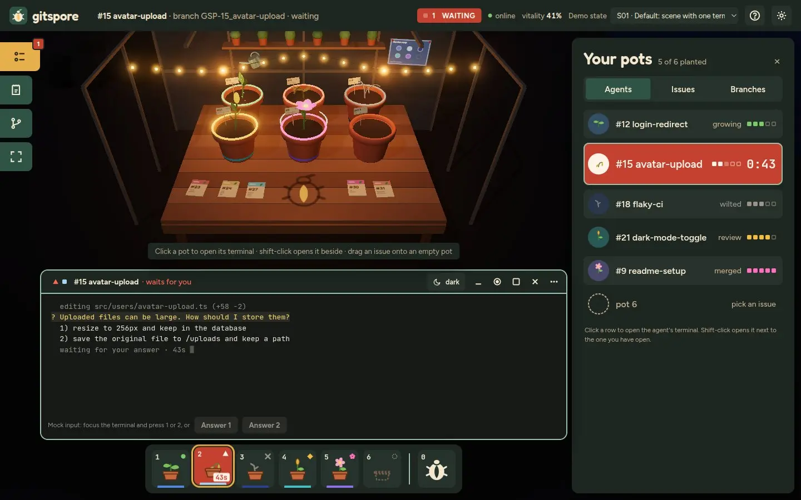
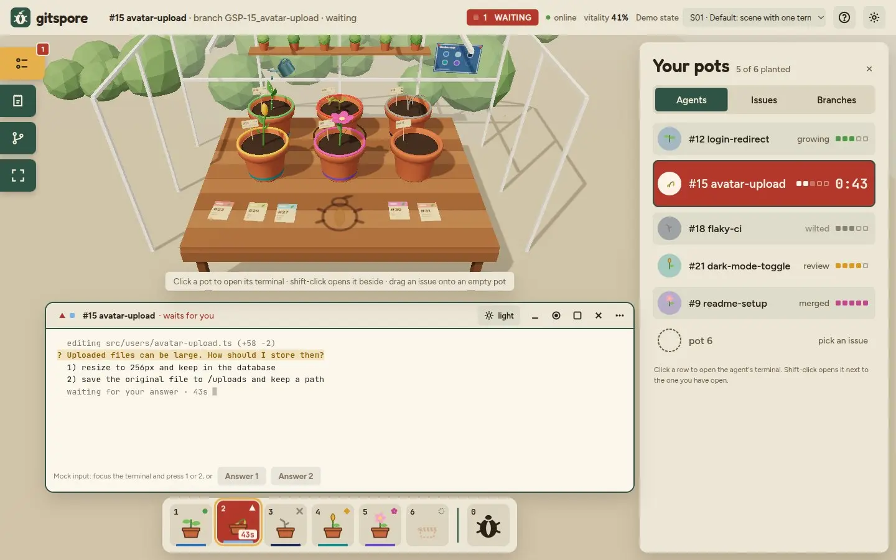
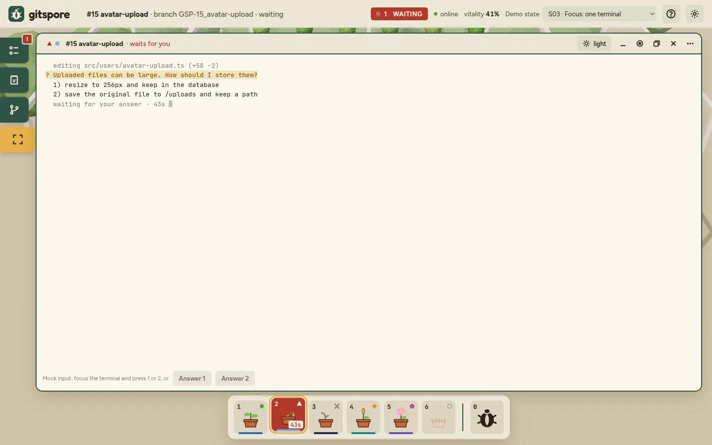
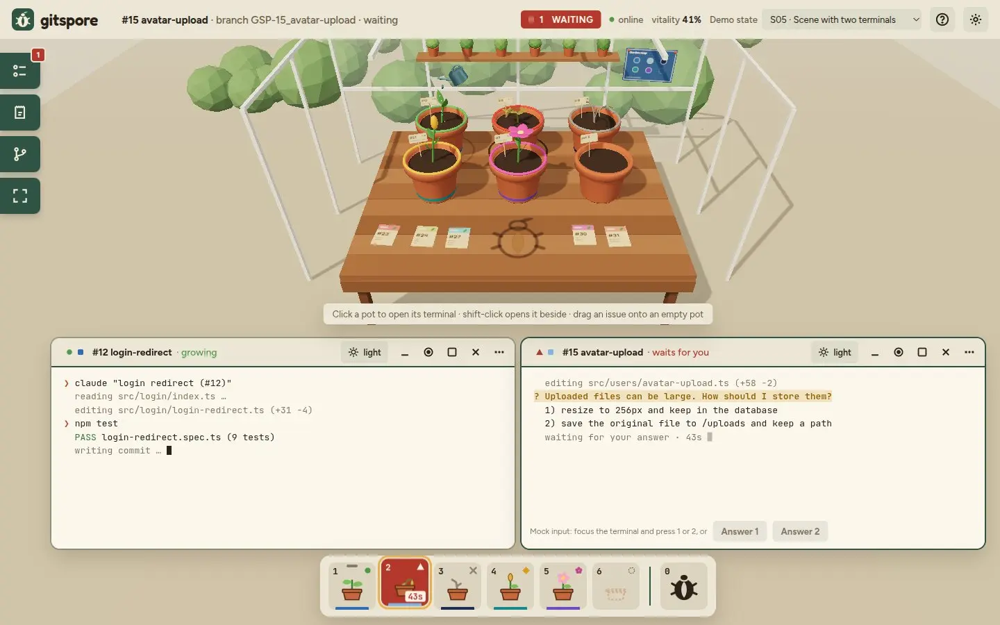
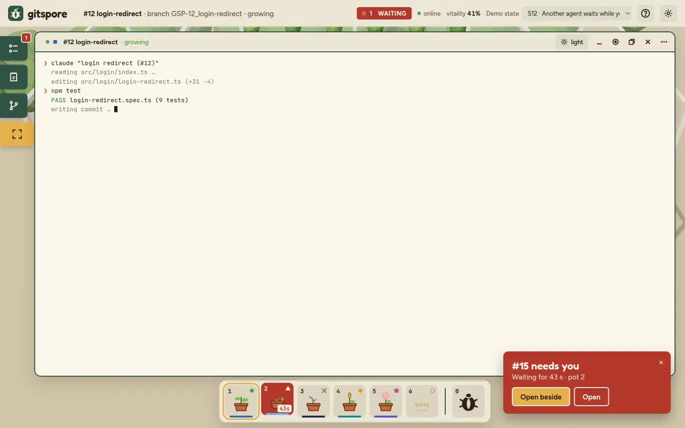
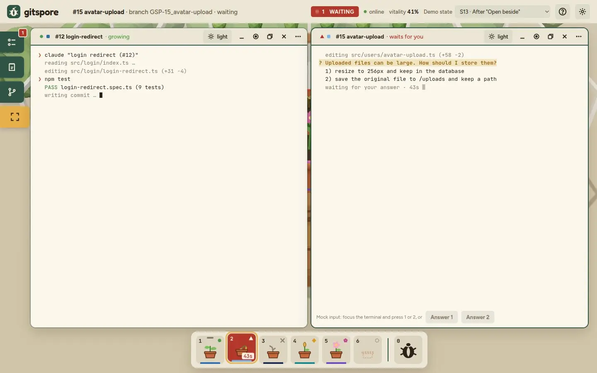
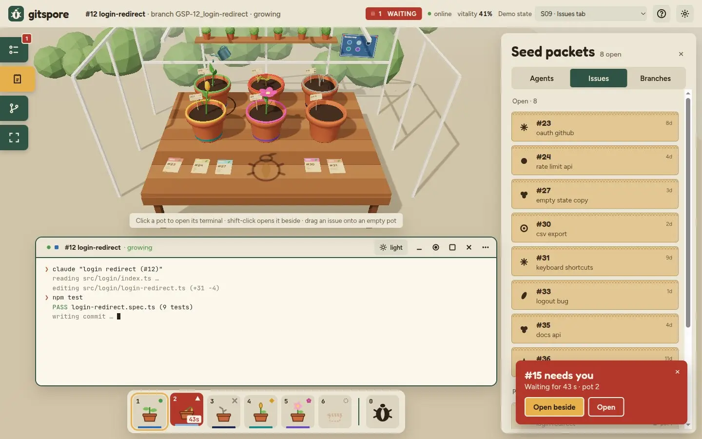
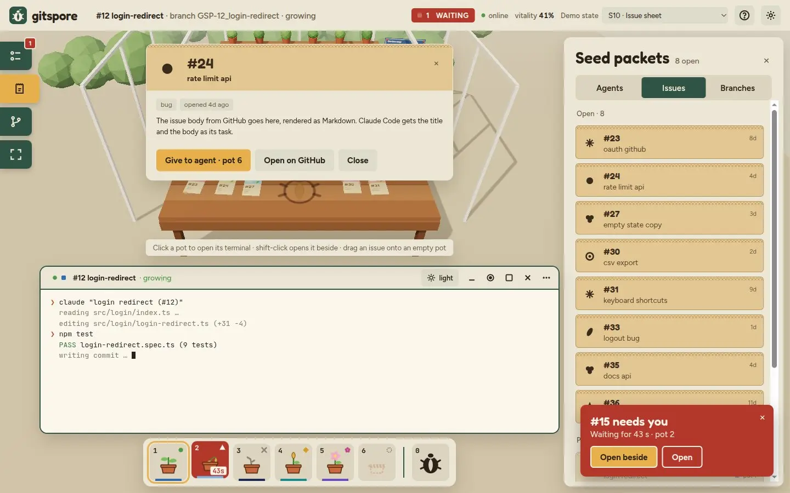
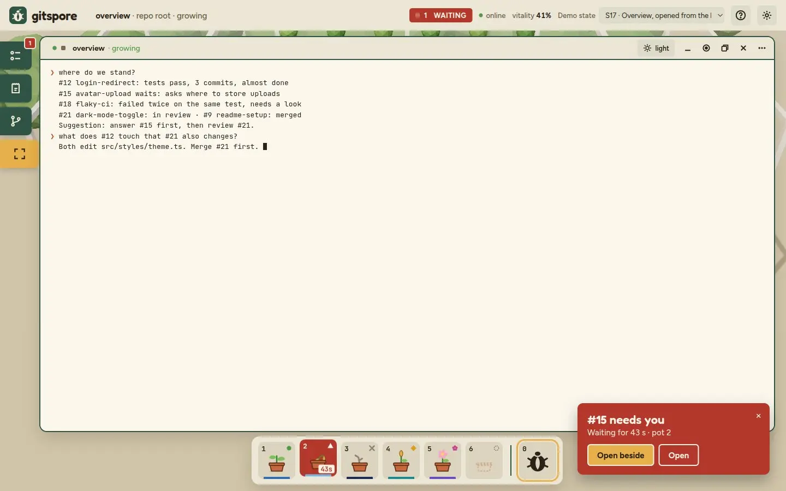
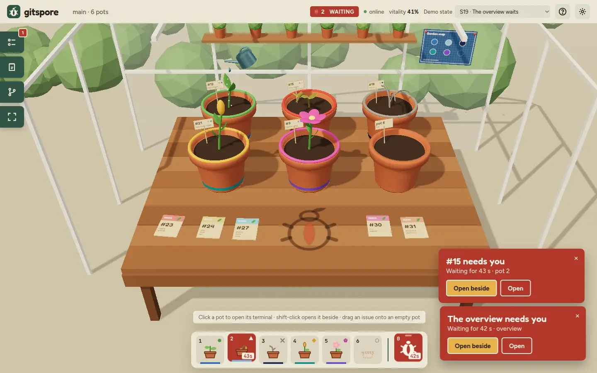

A cozy gardening environment for running AI agents in your repo
Each agent grows in its own pot on a greenhouse table.

The problem
Working with agents made cozy
Working with agents means a lot of watching text scroll by
Today
AI agents open coding to people who aren't full-time developers
Their tools are still terminals: walls of scrolling text
While an agent works you wait, and attention drifts
Look away and you miss the moment it needs you
gitspore
We're exploring a different place to work with agents: pleasant and cozy
The plants show what each agent is doing at a glance
Zone out, watch the garden, chat with the beetle
A plant wilts when its agent needs you, so you miss nothing
Stay in the room while the work gets done
Issues are seed packets, pots are worktrees, a merge makes the plant bloom.
Others
Others run agents in parallel too
What it is
Worktrees
Shows waiting
For
Agent Office
3D cartoon office, one desk per agent, issues on cork boards
yes
red beacon
teams, with voice
Conductor
Mac app: parallel agents, then review and merge
yes
–
one developer
herdr
Server that owns the agents' terminals
–
"blocked" state
one developer
Paperclip
Agents as a company: roles, budgets, approvals
–
approvals
one person as the CEO
gitspore
A greenhouse table, one plant per agent
yes
the plant wilts, worse the longer it waits
one developer
Agent Office is the closest. We aim at one developer and a calm room, and waiting gets worse over time instead of a flag that looks the same at 5 seconds and at 5 minutes.
How to read a pot
Five states, each with a plant, a word, a growth stage and a shape
State
Plant
Word
Growth
Shape
Waiting is the only red. Error is grey, review yellow, merged pink. Colour never carries a state alone.
The layout
The scene fills the page, the tools sit on top
Top barfocused agent, waiting count, online status, settings, helpRailagents, issues, branches, scene/focusMainthe 3D scene, with terminal windows in a band below itPanelAgents · Issues · Branches, one fixed widthHotbarone slot per pot (keys 1–6) and the overview (0)Noticeswaiting agents, bottom right

S01The default screen: one agent waits, its terminal is open
The rules
Buttons place the windows, never dragging
Side panel
Agents, Issues, Branches, or closed
One width (~400 px) for all tabs, so windows never jump
Main area
Scene mode: terminals in a band, scene above
Focus mode: terminals cover the scene, panel closes
Windows
Tiles by count: 1, 2, 2+1, 2×2
Each terminal keeps ~80 columns: too narrow, it stacks or becomes a tab

S03Focus: one terminal gets the space

S05Two terminals side by side, panel closed
Attention
Another agent waits while you read

S12Notice bottom right, red hotbar slot, count in the tab title. Your keyboard stays where it was.

S13"Open beside" puts the waiting agent next to the one you were reading.
Start work
Issues are seed packets

S09The Issues tab: open GitHub issues as packets

S10"Give to agent" plants the issue in the next free pot
The overview
The beetle: one chat that sees all agents

S17Hotbar slot 0 or key 0: a Claude Code session in the repo root that knows what every agent did

S19When it waits, the beetle carved into the table glows red
What we build · to be revisited
Four weeks: the core loop first
MVP
Issue to pot: worktree, branch, Claude Code
Agent status from Claude Code hooks, wilting
Terminal windows, hotbar, side panel
Waiting notice, title and favicon count
Merge detection with bloom
Should-have
Branches tab and garden map
Overview agent and beetle carving
Tiling 2–4 terminals
Drag an issue onto a pot
Agent colours, sound, browser notification
Out
Agents other than Claude Code
More than one repo, more than six agents
Merge conflicts in the UI
Stack: Next.js and React Three Fiber in the browser, a NestJS daemon on your machine (node-pty, git worktrees, Socket.io, SQLite).
Still open · to be revisited
What we still have to decide
Can we detect "waiting for input" reliably from Claude Code hooks?
Merge: detect it on GitHub, or a merge button in gitspore?
Which key leaves the terminal, now that Esc belongs to Claude Code?
Branch naming that links a branch to its issue
Overview agent: should-have or MVP?
Does a merged pot stay in the list or empty right away?
Full spec: docs/design/layout.html · 3D prototype: docs/design/prototype.html